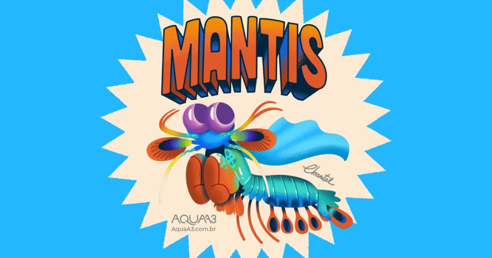

Stomatopoda (ou Odontodactylus scyllarus), chamados popularmente de tamarutacas ou de lacraias-do-mar no Brasil, é uma ordem de crustáceos marinhos da subclasse Hoplocarida, que agrupa cerca de 400 espécies, caracterizadas principalmente pela morfologia da segunda pata torácica, que é modificada em apêndice subquelado, lembrando uma pata de louva-a-deus.
| Reino: | Animalia |
| Filo: | Arthropoda |
| Subfilo: | Crustáceos |
| Classe: | Malacostraca |
| Subclasse: | Hoplocarida |
| Ordem: | Stomatopoda |
Camarão Mantis é um invertebrado fantástico, um super poderoso do mundo animal
Quando pensamos em crustáceos, o que vem a nossa mente são os simpáticos animais de ambientes aquáticos que, provavelmente, não nos representam perigo. Mas existem espécies com características excepcionais e amedrontadoras, como o Camarão Mantis. Então o que leva este animal a ser tão singular?
Fatos sobre o Stomatopoda
Camarão Mantis é um perfurador e esmagador!

Devido a uma diferença anatômica de seus apêndices, o Camarão Mantis pode ser classificado em dois grupos: os que têm ataque perfurador (spearers) e esmagador (smashers). Com isso, os esmagadores são considerados um dos animais mais fortes e velozes do planeta, por terem um ataque rápido como uma bala e forte como um touro.
O animal mais forte do mundo

O Camarão Mantis esmagador possui dois apêndices bem desenvolvidos (semelhantes a um martelo), chamados de Porretes de Dáctilo. Com essas “super patas” o animal espanca e esmaga suas presas em uma intensidade de aproximadamente 80 kg/cm² (daí o motivo de um de seus nomes ser lagosta-boxeadora).
O animal mais rápido no gatilho

Além da enorme potência de seu soco, esse animal consegue movimentar seus apêndices tal qual um tiro de arma de fogo: seu golpe pode chegar a uma velocidade 720 km/h. Curiosamente, tanto a força quanto rapidez do ataque, não danificam sua estrutura corporal.
Mais duro que o adamantium?

Devido a habilidades tão únicas, pesquisadores de diversas partes do planeta realizam estudos com o objetivo de entender o mecanismo da força de ataque e o motivo da resiliência do Camarão Mantis quanto ao forte impacto.
Referências bibliográficas
Video sobre o Stomatopada em ação!
Para assistir clique aqui!
Camarão Mantis é um perfurador e esmagador!
Devido a uma diferença anatômica de seus apêndices, o Camarão Mantis pode ser classificado em dois grupos: os que têm ataque perfurador (spearers) e esmagador (smashers). Com isso, os esmagadores são considerados um dos animais mais fortes e velozes do planeta, por terem um ataque rápido como uma bala e forte como um touro.
O animal mais forte do mundo
O Camarão Mantis esmagador possui dois apêndices bem desenvolvidos (semelhantes a um martelo), chamados de Porretes de Dáctilo. Com essas “super patas” o animal espanca e esmaga suas presas em uma intensidade de aproximadamente 80 kg/cm² (daí o motivo de um de seus nomes ser lagosta-boxeadora).
O animal mais rápido no gatilho
Além da enorme potência de seu soco, esse animal consegue movimentar seus apêndices tal qual um tiro de arma de fogo: seu golpe pode chegar a uma velocidade 720 km/h. Curiosamente, tanto a força quanto rapidez do ataque, não danificam sua estrutura corporal.
Mais duro que o adamantium?
Devido a habilidades tão únicas, pesquisadores de diversas partes do planeta realizam estudos com o objetivo de entender o mecanismo da força de ataque e o motivo da resiliência do Camarão Mantis quanto ao forte impacto.